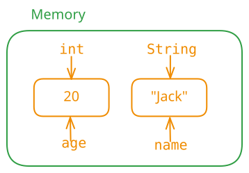

变量是内存中的一块空间，用来存储数据（可以看作盒子）。它有三要素：
- 数据类型：决定空间大小，如 int。
- 名字：合法的标识符，如 age。
- 值：与数据类型对应的数据，如 20。

详细展开（可跳过）：var-detail1 · var-detail2 变量的作用：提高程序可读性。
声明语法：
数据类型 变量名; // 规范：变量名首字母小写，后续单词首字母大写
例如：
int age;
String name;
double π;
使用 = 赋值，可先声明后赋值，也可声明时直接赋值：
age = 20;
name = "jack";
π = 3.14;
int num = 200; // 声明并赋值
变量可以重新赋值，但新值的类型必须与变量类型一致：
age = 30;
// age = "张三"; // 错误：类型不匹配
System.out.println(age);age = 30;int num1 = 10;
int num2 = num1;
int num3 = num1 + num2;
int a, b, c = 300;（此时 a、b 未赋值，c 为 300）。变量只在声明它的花括号 {} 内有效，即“出了大括号就不认识了”。作用域不同，生命周期也不同（从内存开辟到内存释放）。
局部变量与成员变量同名时，方法内优先使用最近的（局部变量）。
与 C、Rust 不同，Java 不允许在嵌套代码块中声明与外部变量同名的变量。
static 修饰的成员变量。static 修饰的成员变量。